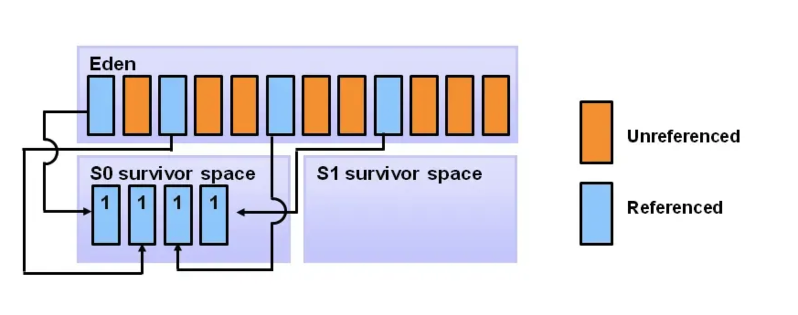

双缓冲(double buffering)是高效处理I/O操作的一种并发技术，它使用两个buffer,一个goroutine使用其中一个buffer进行写，而另一个goroutine使用另一个buffer进行读，然后进行交换。这样两个goroutine可能并发的执行，减少它们之间的等待和阻塞。
本文还提供了一个类似Java的java.util.concurrent.Exchanger的Go并发原语，它可以用来在两个goroutine之间交换数据，快速实现双缓冲的模式。 这个并发原语可以在github.com/smallnest/exp/sync/Exchanger找到。
double buffering 并发模式
双缓冲(double buffering)设计方式虽然在一些领域中被广泛的应用，但是我还没有看到它在并发模式中专门列出了，或者专门列为一种模式。这里我们不妨把它称之为双缓存模式。
这是一种在I/O处理领域广泛使用的用来提速的编程技术，它使用两个缓冲区来加速计算机，该计算机可以重叠 I/O 和处理。一个缓冲区中的数据正在处理，而下一组数据被读入另一个缓冲区。
在流媒体应用程序中，一个缓冲区中的数据被发送到声音或图形卡，而另一个缓冲区则被来自源（Internet、本地服务器等）的更多数据填充。
当视频显示在屏幕上时，一个缓冲区中的数据被填充，而另一个缓冲区中的数据正在显示。当在缓冲区之间移动数据的功能是在硬件电路中实现的，而不是由软件执行时，全动态视频的速度会加快，不但速度被加快，而且可以减少黑屏闪烁的可能。
在这个模式中，两个goroutine并发的执行，一个goroutine使用一个buffer进行写(不妨称为buffer1)，而另一个goroutine使用另一个buffer进行读(不妨称为buffer2)。如图所示。
当左边的writer写满它当前使用的buffer1后，它申请和右边的goroutine的buffer2进行交换，这会出现两种情况：
- 右边的reader已经读完了它当前使用的buffer2，那么它会立即交换，这样左边的writer可以继续写buffer2，而右边的reader可以继续读buffer1。
- 右边的reader还没有读完buffer2，那么左边的writer就会阻塞，直到右边的reader读完buffer2，然后交换。
周而复始。
同样右边的goroutine也是同样的处理，当它读完buffer2后，它会申请和左边的goroutine的buffer1进行交换，这会出现两种情况：
- 左边的writer已经写完了它当前使用的buffer1，那么它会立即交换，这样右边的reader可以继续读buffer1，而左边的writer可以继续写buffer2。
- 左边的writer还没有写完buffer1，那么右边的reader就会阻塞，直到左边的writer写完buffer1，然后交换。
周而复始。
这样两个goroutine就可以并发的执行，而不用等待对方的读写操作。这样可以提高并发处理的效率。
不仅仅如此， double buffering其实可以应用于更多的场景， 不仅仅是buffer的场景，如Java的垃圾回收机制中，HotSpot JVM把年轻代分为了三部分：1个Eden区和2个Survivor区（分别叫from和to,或者s0和s1），在GC开始的时候，对象只会存在于Eden区和名为“From”的Survivor区，Survivor区“To”是空的。紧接着进行GC，Eden区中所有存活的对象都会被复制到“To”，而在“From”区中，仍存活的对象会根据他们的年龄值来决定去向。年龄达到一定值的对象会被移动到年老代中，没有达到阈值的对象会被复制到“To”区域。经过这次GC后，Eden区和From区已经被清空。这个时候，“From”和“To”会交换(exchange)他们的角色，也就是新的“To”就是上次GC前的“From”，新的“From”就是上次GC前的“To”。不管怎样，都会保证名为To的Survivor区域是空的。Minor GC会一直重复这样的过程，直到“To”区被填满，“To”区被填满之后，会将所有对象移动到年老代中。

Exchanger的实现
既然有这样的场景，有这样的需求，所以我们需要针对这样场景的一个同步原语。Java给我们做了一个很好的师范，接下来我们使用实现相应的Go,但是我们的实现和Java的实现完全不同，我们要基于Go既有的同步原语来实现。
基于Java实现的Exchanger的功能，我们也实现一个Exchanger, 我们期望它的功能如下：
- 只用作两个goroutine之间的数据交换，不支持多个goroutine之间的数据交换。
- 可以重用。交换完之后还可以继续交换
- 支持泛型，可以交换任意类型的数据
- 如果对端还没有准备交换，就阻塞等待
- 在交换完之前，阻塞的goroutine不可能调用
Exchange方法两次 - Go内存模型补充： 同一次交换， 一个goroutine在调用
Exchange方法的完成，一定happens after另一个goroutine调用Exchange方法的开始。
如果你非常熟悉Go的各种同步原语，你可以很快的组合出这样一个同步原语。如果你还不是那么熟悉，建议你阅读《深入理解Go并发编程》这本书，京东有售。
下面是一个简单的实现，代码在Exchanger。
我们只用left、right指代这两个goroutine, goroutine是Go语言中的并发单元，我们期望的就是这两个goroutine发生关系。
为了跟踪这两个goroutine，我们需要使用goroutine id来标记这两个goroutine，这样避免了第三者插入。
|
|
你必须使用 NewExchanger 创建一个Exchanger，它会返回一个Exchanger的指针。
初始化的时候我们把left和right的id都设置为-1，表示还没有goroutine使用它们，并且不会和所有的goroutine的id冲突。
同时我们创建两个channel，一个用来左边的goroutine写，右边的goroutine读，另一个用来右边的goroutine写，左边的goroutine读。channel的buffer设置为1，这样可以避免死锁。
|
|
Exchange方法是核心方法，它用来交换数据，它的实现如下：
|
|
当一个goroutine调用的时候，首先我们尝试把它设置为left,如果成功，那么它就是left。
如果不成功，我们就判断它是不是先前已经是left，如果是，那么它就是left。
如果先前，或者此时left已经被另一个goroutine占用了，它还有机会成为right，同样的逻辑检查和设置right。
如果既不是left也不是right，那么就是第三者插入了，我们需要panic，因为我们不希望第三者插足。
如果它是left，那么它就会把数据发送到right，然后等待right发送数据过来。
如果它是right，那么它就会把数据发送到left，然后等待left发送数据过来。
这样就实现了数据的交换。
Exchanger的使用
我们使用一个简单的双缓冲例子来说明如何使用Exchanger，我们创建两个goroutine，一个goroutine负责写，另一个goroutine负责读，它们之间通过Exchanger来交换数据。
|
|
在这个例子中 g1负责写，每个buffer的容量是1024，写满就交给另外一个读g2,并从读g2中交换过来一个空的buffer继续写。
交换10次之后，两个goroutine都退出了，我们检查写入的数据和读取的数据是否一致，如果一致，那么就说明我们的Exchanger实现是正确的。
总结
文本介绍了一种类似Java的Exchanger的同步原语的实现，这个同步原语可以在双缓冲的场景中使用，提高并发处理的性能。

{kind=link}